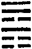
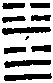

周易禪解卷第六
下經之二
(乾下兌上)
夬。揚于王庭。孚號有厲。告自邑。不利即戎。利有攸往。
約世道。則民說無疆。坐享豐樂。而所行必決。約佛法。則損己利他。化功歸己。決當進斷餘惑。證極果也。夫世間。豈容有陽而無陰。有男而無女。有君子而無小人。然陰居陽上。女占男先。小人據于君子之上。則必將共決去之。必將至王庭以揚之。必將相約相信而聲明其罪以號之。凡此皆有厲之道也。吾謂宜反身修德而告自邑。不宜以力爭而即戎。但使以德往化。則無不利矣。佛法釋者。體惑法界。即惑成智。名告自邑。敵對相除。名為即戎。
彖曰。夬。決也。剛決柔也健而說。決而和。揚于王庭。柔乘五剛也。孚號有厲。其危乃光也。告自邑。不利即戎。所尚乃窮也。利有攸往。剛長乃終也。
健而說。決而和。正明應以德化。不應以力爭也。知危則光。尚力則窮利有攸往。則以德化小人。小人皆為君子。而剛長乃終也。
象曰。澤上於天。夬。君子以施祿及下。居德則忌。
祿宜施。德宜居。祿不施則恩枯。德不居則本喪。又以此施祿。則及下而可以化人。以此居德。則自滿而為人所忌。
初九。壯于前趾。往不勝為咎。象曰。不勝而往。咎也。
九二。惕號。莫夜有戎。勿恤。象曰。有戎勿恤。得中道也。
剛而得中。知懼知警。居德既周。則有戎可無患矣。
九三。壯于頄。有凶。君子夬夬。獨行遇雨。若濡有慍。無咎。象曰。君子夬夬。終無咎也。
過剛不中。怒且悻悻然現于其面。太剛必折。有凶道也。君子于此。何不自夬其夬。舍上下四陽。而獨行其與上六應之正理。則以德相化。陰陽相和。庶遇雨而若濡。雖彼群陽不知我心。不諒我跡。或有慍者。然化小人之道必應如此。終無咎也。言夬夬者。群陽以決去小人為夬。今吾以決不同彼群陽為夬夬也。
九四。臀無膚。其行次且。牽羊悔亡。聞言不信。象曰。其行次且。位不當也。聞言不信。聰不明也。
九四以下爻為臀下爻純剛無柔。如有骨無膚。臀既無膚。行必次且不前。若讓彼羊在前。而隨其後。則羊仍屬我所牽。便可悔亡。但以剛不中正。聞此善言。決不相信也。羊。指上六。為兌之主。四宜牽之。不宜決之。亦不宜與之爭前後也。
九五。莧陸夬夬。中行無咎。象曰。中行無咎。中未光也。
上六柔脆如莧。而在五剛之上。如莧在陸。人人得踐踏之。嗟嗟。彼獨非坤德乎。彼獨非太極全體所成。還具太極全體者乎。是宜夬彼群陽所夬而護養之。乃為中行之道。可無咎耳。然在夬時。終不免以君子小人二其心。未肯忘于大同。故曰中未光也。聖人于復。則諄諄以保護微陽。于夬則諄諄以保護殘陰。陰陽豈可偏廢哉。
上六。無號。終有凶。象曰。無號之凶。終不可長也。
下之五爻。聖人所以勸誡群陽者至矣。以六居上。雖得其正。而陰柔才弱。不能惕號以自周備。故終不可長不若反乎下以為姤耳。
(巽下乾上)
姤女壯。勿用取女。
約世道。則決之于意中者。必將遇之于意外。約佛法。則決斷餘惑而上同諸佛者。必巧用性惡而下遇眾生。又約究竟。則夬是無間道。姤是解脫道。約初心。則夬是乾慧。姤是理水也。以無號之一陰忽反于下而得其所安。勢必漸壯。故九二宜包而有之。不宜使賓取之。佛法釋者。在佛為性惡法門。在眾生不了。則為修惡。九二行菩薩道。自可示同修惡。不令餘人作惡。又解脫道。一得永得。名女壯。無所取著。名勿用取女。理水亦爾。
彖曰。姤。遇也。柔遇剛也。勿用取女。不可與長也。天地相遇。品物咸章也。剛遇中正。天下大行也。姤之時義大矣哉。
不曰剛遇柔而曰柔遇剛者。柔為政也。佛法釋者。剛是性德。柔是修德以修顯性名柔遇剛。剛是妙觀。柔是妙止。從止起觀。名柔遇剛。剛是智慧。柔是禪定。因定發慧。名柔遇剛。修本無加于性。止亦不可偏勝。定亦不可偏多。故曰不可與長也。天地相遇。天得地之初爻而為巽。撓萬物者莫疾乎風。齊乎巽。而萬物潔齊。故曰品物咸章也。九二之剛。下遇初六。上遇九五之中正。在世法中。則為大臣得君以撫民。在佛法中。則為智慧稱性以成福。故曰天下大行也。
象曰。天下有風。姤。后以施命誥四方。
剝乎上者反乎下。名之曰復。性德也。觀慧也。不可即致用也。故如雷在地中而后不省方。夬乎上者反乎下。名之曰姤。修德也。止定也。即可以取效也。故如天下有風而后施誥命。復以見天地之心。姤以見時義之大。復即乾知大始。姤即坤作成物。復即金聲。姤即玉振。復即智巧。姤即聖力。而腐儒以抑陰戒小人釋之。不亦陋乎。
初六。繫于金柅。貞吉。有攸往見凶。羸豕孚蹢躅。象曰。繫于金柅。柔道牽也。
無君子莫治野人。無野人莫養君子。此世法之必應互相繫屬者也。無性不能起修。無修不能顯性。非智不禪。非禪不智。此佛法之必應互相繫屬者也。一陰始生于下。得九二金柅以繫之。此貞吉之道也。不繫則有攸往。往則見凶。如羸豕必能蹢躅。由不早為調御故耳。柔道宜與剛德相牽。則互相與有成矣。
九二。包有魚。無咎。不利賓。象曰。包有魚。義不及賓也。
修顯性。則性有修。定發慧。則慧有定。性修交成。定慧平等。無咎之道也。但可內自證知。豈可舉似他人。世法亦爾。吾民吾子。豈可令他人分治哉。
九三。臀無膚。其行次且。厲。無大咎。象曰。其行次且。行未牽也。
二近于初。故包有魚。三遠于初。故臀無膚。無膚則行必次且矣。然雖厲而無大咎者。以與初六同居巽體。但行未與柔道相牽合耳。
九四。包無魚。起凶。象曰。無魚之凶。遠民也。
剛不中正。執性而廢修。恃慧而棄定。猶世宰輔。居上而遠民也。方其高談理性。正逞狂慧。不知其為凶。臨命終時。地獄相現。則悔無所及。猶包中無魚。起水而後知之。
九五。以杞包瓜。含章。有隕自天。象曰。九五含章。中正也。有隕自天。志不舍命也。
枸杞枝軟而長。以此包瓜。則其蔓交繫而不可解。此九二與初六相遇之象也。九五為姤之主。乃高居于上。遠不相及。但以剛健中正。則性德久熏成種。將欲發煥。故名含章。由其志不舍命。不肯自暴自棄。故初六雖不相遇。必有自天隕墜以遇我者矣。發得本有。名為自天。無心契合。名為有隕。又九二如大臣。能有初六之民。與民固結。九五如聖君。能用九二之賢臣。故名含章。既有九二。則并九二所遇初六之民而有之矣。民與之。即天與之。故云有隕自天。
上九。姤其角。吝。無咎。象曰。姤其角。上窮吝也。
居姤之終。不與柔遇。名姤其角。此如二乘偏真空慧。但免無魚之凶。不無焦芽敗種之吝也。
(坤下兌上)
相遇則相聚。世出世之常也。聚安有不亨者哉。幽明之情萃。故有廟可假。上下之情萃。故大人可見。用大牲以假有廟。利攸往以見大人。皆順乎時義之所當然。所謂貞也。
彖曰。萃。聚也。順以說。剛中而應。故聚也。王假有廟。致孝享也。利見大人亨。聚以正也。用大牲吉。利有攸往。順天命也。觀其所聚。而天地萬物之情可見矣。
同一致孝享耳。有時云二簋可用。有時云樽酒簋貳。今則云用大牲吉。同一見大人耳。有時云不利涉川。有時云往蹇來碩。今則云利有攸往。夫豈有私意于其間哉。宜儉則儉。宜豐則豐。可往則往。可來則來。皆所以順天命而觀物情耳。
象曰。澤上于地。萃。君子以除戎器戒不虞。
楊慈湖曰。澤所以能瀦水而高上于地者。以有坊也。民所以得安居而聚者。不可無武備也。除治戎器。戒備不虞。皆大易之道也。蕅益子曰。約佛法。則毘尼內禁。約觀心。則密咒治習。
初六。有孚不終。乃亂乃萃。若號。一握為笑。勿恤。往無咎。象曰。乃亂乃萃。其志亂也。
當萃之時。未有不志于萃者也。二陽為受萃之主。而四陰萃之。初與四為正應。本可信也。不中不正。故不能終其信。而乃亂乃萃焉。乃亂故若號。乃萃故一握為笑。言其號笑夾雜而為一握也。然既是正應。何所疑恤。不若往從為無咎耳。志亂故號笑夾雜。明相應之理未嘗亂也。
柔順中正。上應九五陽剛中正之君。本無可疑者也。乃初六與六三皆往萃于九四。我居二者之間。設不自引而出。何以取信于九五乎。苟引出而得其信。則不必用大牲。而用禴亦利矣。舍二陰而獨從所應。故如用禴。其物甚薄。但由二有中德。故不變所守以隨兩陰耳。
六三。萃如嗟如。無攸利。往無咎。小吝。象曰。往無咎。上巽也。
上無應與。志欲萃而無從。故嗟如而無所利。然當萃之時。往從九四。亦可無咎。但非正應故得小吝。而九四則巽以受之矣。
九四。大吉無咎。象曰。大吉無咎。位不當也。
當萃之時。初六應之。六三歸之。不幾以臣擬君乎。故必大吉乃得無咎。如伊尹周公之終盡臣道可也。
九五。萃有位。無咎。匪孚。元永貞。悔亡。象曰。萃有位。志未光也。
陽剛中正。以天位而受萃者也。然惟二實應之。上實附之。而初與三已萃于九四矣。僅可無咎。若能忘吾位以任九四。聽彼二陰之匪孚我。而元萃于四者永貞弗改。則九四既為吾臣。二陰何一非吾民也。故得悔亡。設但恃其位以為萃。則志未光矣。
上六。齎咨涕洟。無咎。象曰。齎咨涕洟。未安上也。
以陰居陰。而在上位。心不自安。故齎咨涕洟。以附悅于九五。得無咎也。
(巽下坤上)
升。元亨。用見大人勿恤。南征吉。
氣聚而上升。如木之升于地。元亨可知也。巽順非果于有為者。故勸以用見大人勿恤。萬物齊乎巽。而相見乎離。故南征則吉。欲其嚮明以行志也。
彖曰。柔以時升。巽而順。剛中而應。是以大亨。用見大人勿恤。有慶也。南征吉。志行也。
巽木本柔。故必以時而升。木之升固必藉土。土亦以生木為功。今九二剛中而應六五。蓋不惟木之志。亦是土之志也。
象曰。地中生木。升。君子以順德。積小以高大。
道體本無大小。而君子之積德也。順而致之。必由小以高大。譬如合抱之木始于微芒。但不可戕伐。亦不可助長耳。
初六。允升大吉。象曰。允升大吉。上合志也。
為巽之主。上與二陽合志。故信能升而大吉也。
九二。孚乃利用禴。無咎。象曰。九二之孚。有喜也。
升九二之求孚于六五。以各不得其正。非如萃六二之孚于九五也。但萃之六二。以兩鄰同質。而不同志。故中雖未變。而須引吉。今升之九二。以兩鄰異質。而志相合。故不惟無咎。而且有喜。
九三。升虛邑。象曰。升虛邑。無所疑也。
以堅剛之木。上升于柔順之土。何疑阻哉。
巽之升也為木。坤之升也為山。而人之升也為亨于天地山川鬼神。其事不同。其所以為順一也。方木之升于地。人但以為木剋土耳。不知木升即是地升。以離地四微。別無木四微故。如太王之去豳而邑于岐。人但以為王棄豳耳。不知邑岐即是邑豳。以非捨豳人而別撫岐人故。
六五。貞吉升階。象曰。貞吉升階。大得志也。
朝有君子。則聖王之志得。猶地有喬木。則成園苑。故地未有不以升木為志者也。九二剛中。而五應之。此明與以可升之道。猶聖王之設階以升君子。但恐其以陰居陽。不能鑒九二之孚。故特以貞誡之。欲其貞于九二也。
上六。冥升。利于不息之貞。象曰。冥升在上。消不富也。
升至于冥。可以息矣。而有不息之貞。則宜冥而益升。此所謂天爵也。修其天爵。則匹夫不為貧賤。而不富可消矣。
(坎下兌上)
困。亨。貞大人吉無咎。有言不信。
升而不已必困。此盈虛消息之常也。困心衡慮。實所以致亨。然不以正道持之。不以大人處之。何能吉無咎哉。設無躬行實德。而但有空言。決不足以取信矣。
彖曰。困。剛揜也。險以說。困而不失其所亨。其惟君子乎。貞大人吉。以剛中也。有言不信。尚口乃窮也。
坎剛在下。而為兌柔所揜。剛既被揜。水漏澤枯。困之象也。處險而說。素患難行乎患難。遯世無悶。不改其樂。非君子其孰能之。九二九五。皆以剛而得中。此大人之貞。吉之道也。苟不守此貞。而徒尚口。適足以取窮而已矣。
象曰。澤無水。困。君子以致命遂志。
水在澤下。澤中無水。枯槁窮困。此已定之命也。君子致之而已。豈容作意而不順受。剛中故處險能說。此在我之志也。君子則必遂之。豈因顛沛而或稍違。
初六。臀困于株木。入于幽谷。三歲不覿。象曰。入于幽谷。幽不明也。
六爻皆處困者也。惟剛中大人能不失其所亨。初六居下。臀之象也。上應九四之株木。正當困時。不能相庇。而陰居險初。則如入于幽谷。三歲不能相見矣。
九二。困于酒食。朱紱方來。利用亨祀。征凶。無咎。象曰。困于酒食。中有慶也。
當困之時。能以剛中自養。故名困于酒食。九五陽剛中正之君。必將以朱紱錫我。使我同濟時困。我但當默然以誠應之。如亨祀然。若遽往則必有凶。而志在救時。仍無咎也。中有慶即是貞大人吉。此如伊尹就湯。紱。蔽膝也。
六三。困于石。據于蒺藜。入于其宮。不見其妻。凶。象曰。據于蒺藜。乘剛也。入于其宮。不見其妻。不祥也。
陰柔不中不正。居于二陽之間。四如石。二如蒺藜。上六不與相應。故入其宮而不見其妻。由無禎祥之德。所以自取其凶。
九四。來徐徐。困于金車。吝。有終。象曰。來徐徐。志在下也。雖不當位。有與也。
夫處困而亨。非剛中者不能也。九四正在困時。猶不能忘情于初六。而來徐徐。既志在初六。豈惟不與九二合德。反困于九二之金車而吝矣。然九二剛中。必能與我同濟時困。不因我不當位而遂棄我。故可有終。
九五。劓刖。困于赤紱。乃徐有說。利用祭祀。象曰。劓刖。志未得也。乃徐有說。以中直也。利用祭祀。受福也。
九五陽剛中正。居于尊位。視天下如一身者也。上六困于葛藟。如劓我之鼻。初六困于株木。如刖我之足。我方賴九二同行濟困。猶如赤紱。而彼方困于酒食。則是我困于赤紱也。然九二中直。必徐應我而有悅。我當竭誠以感之。如祭祀然。庶可以受福矣。
上六。困于葛藟。于臲卼。曰動悔有悔。征吉。象曰。困于葛藟。未當也。動悔有悔。吉行也。
處困之極。可以動而行矣。陰柔才弱。疑慮未當。猶牽纏而不自安。懼其動而有悔。而每自退悔也。故聖人直以征吉決之。
(巽下坎上)
井。改邑不改井。無喪無得。往來井井。汔至。亦未繘井。羸其瓶。凶。
夫井者。居其所而遷者也。知井之居所而遷。則知困之窮而通矣。故次困而明井。邑可改。井不可改。可改則有喪有得。既不可改。何喪何得。食水者往。未食者來。人有往來。井何往來。下瓶將及于水曰汔至。得水收繩未盡曰未繘井。繘井則有功。未繘羸其瓶則凶。此皆人之得喪。非井之得喪也。知井無得喪。則知性德六而常即。知人有得喪。則知修德即而常六。故曰井德之地也。又曰井以辯義。
彖曰。巽乎水而上水。井。井養而不窮也。改邑不改井。乃以剛中也。汔至亦未繘井。未有功也。羸其瓶。是以凶也。
水輪含地。故鑿地者無不得水。喻如來藏性具一切陰界入等。故觀陰界入者無不得悟藏性。但貴以妙止觀力深入而顯發之。藏性一顯。自養養他更無窮盡也。困之貞大人吉。曰以剛中。今改邑不改井。亦曰乃以剛中。困似專指修德。其實發明全修在性。今似專指性德。其實要人全性起修。故隨明未有功而羸瓶則凶。其重修德甚矣。
象曰。木上有水。井。君子以勞民勸相。
夫擔水惠人。則所及者寡。鑿井任汲。則所潤者多。擔水者有作善。鑿井者無作善也。君子之慰勞于民也則勸其交相為養焉。故養而不窮矣。
初六。井泥不食。舊井無禽。象曰。井泥不食。下也。舊井無禽。時舍也。
井之六爻。三陰為井。三陽為泉。初居最下。故象如泥。不惟人不食之。禽亦不顧之矣。理即佛也。
九二。井谷射鮒。甕敝漏。象曰。井谷射鮒。無與也。
在下之中。故為井谷。有泉可以射鮒。而上無應與。如甕既敝漏。不能相汲也。魚之至小者名鮒。蓋指初六。此是名字即佛。薄有聞熏。未成法器。
九三。井渫不食。為我心惻。可用汲。王明。並受其福。象曰。井渫不食。行惻也。求王明。受福也。
以陽居陽。其泉潔矣。猶居下卦。不為人食。是可惻也。上六應之。故可用汲。蓋王既明而用賢。則賢者之福非止獨受而已。此是觀行即佛。圓伏五住故井渫。未證理水故不食。宜求諸佛加被。則可自利利他也。
六四。井甃無咎。象曰。井甃無咎。修井也。
甃者。以磚石包砌其傍。所以禦汙而潔泉者也。故曰修井。此是相似即佛。從思慧入修慧。禦二邊之汙。而潔中道之泉。
九五。井冽寒泉食。象曰。寒泉之食。中正也。
陽剛中正。泉之至潔而泠然者也。功及于物。故得食之。此是分證即佛。中道理水。自利利他。
上六。井收勿幕。有孚元吉。象曰。元吉在上。大成也。
以陰居上。如井之收。收。即井欄。常露之而勿幕。眾皆汲之。而所養無窮矣。此是究竟即佛。功德滿足。盡未來際恒潤眾生。
(離下兌上)
革。已日乃孚。元亨利貞。悔亡。
夫邑改而井不改者。言其處也。井舊。則無禽而泥。可弗革乎。學者以變化氣質為先。猶火之煆金也。方其煆也。金必苦之。既煆成器。而後信火之功也。此革之道。即乾坤之道。大亨以正者也。未信故有悔。已孚則悔亡矣。
彖曰。革。水火相息。二女同居。其志不相得。曰革。已日乃孚。革而信之。文明以說。大亨以正。革而當。其悔乃亡。天地革而四時成。湯武革命。順乎天而應乎人。革之時大矣哉。
革而信之。明未革則人不信也。革而當。乃使人信。其悔乃亡。明不當則悔不亡也。須如天地之革時。湯武之革命。方可取信于人耳。革何容易。
象曰。澤中有火。革。君子以治曆明時。
時無實法。依于色心分位假立。心無形像。依色表見。色有共相及不共相。共相之在上者為日月星宿。因日月星宿周行于天。據其所歷之度。以明春夏秋冬之時。春則萬物皆春。乃至冬則萬物皆冬。故知時惟心現。無在而無所不在。猶如火性無我。亦無在而無所不在。雖澤中亦自有之。彼大海中火光常起。即其驗也。
初九。鞏用黃牛之革。象曰。革用黃牛。不可以有為也。
離為能革。兌為所革。而初九居下。上無應與。此不可以有為者也。但用黃牛之革以自鞏固可耳。
陰柔中正。為離之主。得革物之全能者也。革必己日乃孚。而上應九五。是其嘉配。故征吉而無咎。
過剛不中。而應上六。上六陰柔得正。乃君子而如文豹者也。何容更以剛燥革之。征則必凶。雖得其貞。亦仍危厲。但可自革以相順從。其言至于三就。庶亦可以取信也。
九四。悔亡。有孚改命吉。象曰。改命之吉。信志也。
兌金之質。本待煆以成器。而九四無應于下。則無肯成我者。悔可知也。但剛而不過。又附近于離體之上。其志可信。故悔亡而有孚。可以改其所秉之定命。而日進于自利利他之域矣。
九五。大人虎變。未占有孚。象曰。大人虎變。其文炳也。
以陽剛中正之大人。又得六二陰柔中正之應以輔助之。故如虎之神變。炳乎有文。不待占而足以取信于天下也。
上六。君子豹變。小人革面。征凶。居貞吉。象曰。君子豹變。其文蔚也。小人革面。順以從君也。
豹亦生而有文者也。但待時而變現耳。九三剛燥小人。既見其變。亦革言三就以相順從。然僅革面。未始革心。君子正不必深求也。若欲令心革而往征之。未免得凶。惟居貞以默化之則吉。
(巽下離上)
鼎。元吉亨。
彖曰。鼎。象也。以木巽火。亨飪也。聖人亨以享上帝。而大亨以養聖賢。巽而耳目聰明。柔進而上行。得中而應乎剛。是以元亨。
初陰為足。二三四陽為腹。五陰為耳。上陽為鉉。非鼎象乎。以木巽火而亨飪。非鼎用乎。勿謂鼎之道小。聖人亨以享上帝。亦此鼎耳。即大亨以養天下聖賢。亦此鼎耳。何必離事別求理哉。且以卦德言之。內則巽順。外則離而耳目聰明。六五以柔為離之主。進而上行。得中位而應九二之剛。此豈非聖賢佛祖自陶自鑄自烹自煉之道。其元亨也宜矣。
象曰。木上有火。鼎。君子以正位凝命。
鼎者。國之重寶。君位之所寄也。得其道以正其位。則命可凝。德不稱位。則命去而鼎隨去矣。約象明之。德如木。命如火。有木則有火。木盡則火亡。有德以正其位則命凝。德亡則命亡。故曰惟命不于常也。
初六。鼎顛趾。利出否。得妾以其子。無咎。象曰。鼎顛趾。未悖也。利出否。以從貴也。
初為鼎趾。應四故顛。然及其未烹物而顛之。舊積否惡從此可出矣。顛趾如得妾。出否如得子。母以子貴。因其子而知得妾之未悖。因出否而知顛趾之有功也。
九二。鼎有實。我仇有疾。不我能即。吉。象曰。鼎有實。慎所之也。我仇有疾。終無尤也。
二當鼎腹之下分。陽剛故為有實。上應黃耳金鉉之六五。能護守之。初雖顛趾而有疾。終不害及我也。然在二。則宜慎所之矣。
九三。鼎耳革。其行塞。雉膏不食。方雨虧悔。終吉。象曰。鼎耳革。失其義也。
三當鼎腹之中分。其實腴美。有雉膏可食矣。上無應與。如鼎方革耳而不可行者焉。賴六五柔中之黃耳。貫上九剛而不過之玉鉉。方將舉二以及三。如陰陽之和而得雨。則可以虧悔而終吉矣。懷道而不思致用。故失其義。猶所云不仕無義。激之使及時行道也。
四當鼎腹之上分。其實既滿。而下應初六。則不勝其重。足云折矣。形貌能無赧汗乎。始也不自知其德薄。知小力小。妄據尊位。而謀大任重。今一旦不勝其任。此其所自信者為如何也。
六五。鼎黃耳金鉉。利貞。象曰。鼎黃耳。中以為實也。
五為鼎耳。而有中德。故其色黃。以虛受實。故為金鉉。鉉即指上九也。以鉉貫耳。以耳舉鼎。盡天下聖賢而養之。豈非聖人大亨之正道乎。然六五自本無實。特下應九二之剛中以之為實。即以此而養天下。所謂為天下得人者耳。
上九。鼎玉鉉。大吉無不利。象曰。玉鉉在上。剛柔接也。
上為鼎鉉。自六五觀之。則如金之剛。自其剛而不過之德言之。則如玉之潤矣。金遇猛火則鎔。玉非火所能壞。以此舉鼎。故大吉無不利也。
(震下震上)
震。亨。震來虩虩。笑言啞啞。震驚百里。不喪匕鬯。
主重器者莫若長子。長子未有不奮動以出者也。故震則必亨。然其亨也。必有道以致之。方其初動而來。虩虩乎。如蠅虎之周環顧慮。仍不失其和。而笑言啞啞。夫惟存于己者既嚴且和。以此守重器而為祭主。縱遇震驚百里之大變。能不喪其匕鬯矣。佛法釋者。一念初動。即以四性四運而推簡之。名為虩虩。知其無性無生。名為笑言啞啞。煩惱業境種種魔事橫發。名為震驚百里。不失定慧方便。名為不喪匕鬯也。
彖曰。震。亨。震來虩虩。恐致福也。笑言啞啞。後有則也。震驚百里。驚遠而懼邇也。出可以守宗廟社稷。以為祭主也。
恐懼乃能致福。福不可以倖邀。所謂生于憂患也。啞啞亦非放逸。仍不失其法則也。惟其養之有素如此。故雖當驚遠懼邇之變。人皆退避。而偏能出此凝定之神以當之。可以守宗廟社稷而為祭主也。為祭主。即是不喪匕鬯註腳。
象曰。洊雷震。君子以恐懼修省。
君子不憂不懼。豈俟雷洊震而後恐懼修省哉。恐懼修省。正指平日不睹不聞慎獨功夫。平日功夫能使善長惡消。猶如洊雷能使陽舒陰散也。惟其恐懼修省慣于平日。故雖遇洊雷。亦復不憂不懼矣。問曰。孔子迅雷風烈必變。復云何通。答曰。此是與天地合德。變則同變。亦非憂懼。
初九。震來虩虩。後笑言啞啞。吉。象曰。震來虩虩。恐致福也。笑言啞啞。後有則也。
六爻皆明恐懼修省之道。而德有優劣。位有當否。故吉凶分焉。初九剛正。為震之主。主器莫若長子。吉可知矣。
六二。震來厲。億喪貝。躋于九陵。勿逐。七日得。象曰。震來厲。乘剛也。
六二乘初九之剛。蓋嚴憚切磋之畏友也。藉此深自惕厲。以振刷我陰柔懦弱之習。舉吾平日所謂中正純善多種寶貝盡喪不顧。直躋于乾健高明之九陵。勿更留意求逐。然至于七日。復其故位。則中正純善之德仍在矣。
六三。震蘇蘇。震行無眚。象曰。震蘇蘇。位不當也。
三遠于初。初之所以警發我者。蘇蘇而不切矣。三當自以震行。勿因遠于畏友。而緩其恐懼修省之功。則無眚也。
九四。震遂泥。象曰。震遂泥。未光也。
九四亦震主也。以陽居陰。復陷四陰之間。雖似洊至。遂失其威而入泥。豈能如虩虩啞啞之有光哉。
六五。震往來厲。億無喪有事。象曰。震往來厲。危行也。其事在中。大無喪也。
震六二者惟初九。故但云來厲。震六五者。則初九與九四也。初震既往。四震復來。五得藉此以自惕厲。令所行日進于高明。故曰危行。猶所云邦有道危言危行也。以六居五。不過于柔。又得中道。故其德甚多。而毫無所喪。但有恐懼修省之事耳。
上六。震索索。視矍矍。征凶。震不于其躬。于其鄰。無咎。婚媾有言。象曰。震索索。中未得也。雖凶無咎。畏鄰戒也。
初九之剛。固不足以及我。九四震亦遂泥。聲已索索無餘威矣。而陰柔弱極。方且視矍矍而惶惑無措。以此征往。則中心無主。神已先亂。凶可知也。然震既不及其身。止及其鄰。即因震鄰而恐懼修省。亦可無咎。但禍未至而先防。乃明哲保身之道。倘與婚媾商之。必反以為迂而有言矣。君子可弗自勉乎。
(艮下艮上)
艮其背。不獲其身。行其庭。不見其人。無咎。
夫動與止。雖是相對待法。亦是相連屬法。又是無實性法。究竟是無二體法也。不動曰止。不止曰動。此約相對待言也。因動有止。因止有動。此約相連屬言也。止其動則為靜。止其靜則為動。動其止則為動。動其動則為止。此約無實性言也。止即是動。故即寂恒感。動即是止。故即感恒寂。此約無二體言也。知動止無二體者。始可與言止矣。夫人之一身。五官備于面。而五臟司之。五臟居于腹。而一背繫之。然玄黃朱紫陳于前。則紛然情起。若陳于背。則渾然罔知。故世人皆以背為止也。然背之止也。縱令五官競騖于情欲。而仍自寂然。逮情之動也。縱復一背原無所分別。而畢竟隨往。故以面從背。則背止而面亦隨止。以背從面。則面行而背亦隨行。究竟面之與背。元非二體。不可兩判。今此卦上下皆艮。止而又止。是艮其背者也。艮背何以能無咎哉。是必不獲其身。行其庭不見其人。斯無咎耳。身本非實。特以情欲錮之。妄見有身。今向靜時觀察。其中堅者屬地。潤者屬水。煖者屬火。動者屬風。眼耳鼻舌異其用。四支頭足異其名。三百六十骨節。八萬四千毫竅。畢竟以何為身。身既了不可得。即使歷涉萬變。又豈有人相可得哉。故行其庭而亦不見其人。此則止不礙行。即行恒止。故無咎也。
彖曰。艮。止也。時止則止。時行則行。動靜不失其時。其道光明。艮其止。止其所也。上下敵應。不相與也。是以不獲其身。行其庭不見其人。無咎也。
止其行而為靜。止其止而為動。動靜以時。無非妙止。故其道光明也。止非面牆之止。所非處所之所。特以法法本不相知。法法本不相到。猶此卦之上下敵應而不相與。是以覓身了不可得。雖行其庭。而亦了無人相可見。合于光明之道而無過也。
象曰。兼山艮。君子以思不出其位。
兩山並峙。各安其位者也。是故草木生之。禽獸居之。寶藏興焉。位位無非法界故也。君子于此非不思也。知離此現前之位。別無一法可得。故思不出其位。不出位而恒思。則非枯槁寂滅。思而不出其位。則非馳逐紛紜。恒思則能盡其位之用。故一切旋乾轉坤事業。無不從此法界流。不出則能稱其位之量。故一切位天育物功能。無不還歸此法界。
初六。艮其趾。無咎。利永貞。象曰。艮其趾。未失正也。
居艮之下。其位為趾。止之于初。不令汩于所欲往。斯固未失正而無咎矣。然必利于永貞。時止則止。時行則行。乃獲敦艮之吉耳。
六二。艮其腓。不拯其隨。其心不快。象曰。不拯其隨。未退聽也。
趾也。腓也。股也。皆隨心而為行止者也。然趾無力。不能自專。又正行時趾元自止。今六二其位為腓。而以陰居陰。當艮之時。力能專止而不隨心動。故曰不拯其隨。此非動靜不失其時之道。蓋由未肯謙退。而聽命于天君。故令其心不快。
九三。艮其限。列其夤。厲薰心。象曰。艮其限。危薰心也。
三位在限。而以剛居剛。為艮之主。則腰臗硬直。不可屈申者也。夫上下本自相聯。猶如夤然。今分列而不相繫屬。其危厲不亦薰心矣乎。
六四。艮其身。無咎。象曰。艮其身。止諸躬也。
四位在于胸腹。彖云艮其背。而此直云艮其身。身止則背不待言矣。夫千愆萬繆皆由身起。今陰柔得正。能止諸躬。何咎之有。楊龜山曰。爻言身象言躬者。伸為身。屈為躬。屈伸在我不在物。兼爻與象。是屈伸兼用矣。
六五。艮其輔。言有序。悔亡。象曰。艮其輔。以中正也。
五位在心。心之聲由輔以宣。而以陰居陽。又復得中。能于言未出口前豫定其衡。故言無妄發。發必有序。而口過終可免矣。
上九。敦艮。吉。象曰。敦艮之吉。以厚終也。
為艮之主。居卦之終。可謂止于至善。無所不用其極者矣。性德本厚。而修德能稱性復之。故曰以厚終也。震為長男。故舉乾之全體大用而虩于其初。艮為少男。故舉乾之全體大用而敦于其上。一始一終。知及仁守之功備。非動非靜之體復矣。
(艮下巽上)
漸。女歸吉。利貞。
夫敦艮既非面牆。則止而不失其行之時矣。行之以巽。故名曰漸。君子將致身以有為。必如女之歸夫。始終以禮而非苟合。乃得吉耳。苟不利貞。則躁進固足取辱。雖漸進亦豈能正人哉。佛法釋者。理則頓悟。乘悟併銷。如震虩而艮敦。事非頓除。因次第盡。如女歸而漸進。又次第禪門名之為女。即事禪而達實相名之為歸。以圓解遍修事禪名之為貞。
彖曰。漸之進也。女歸吉也。進得位。往有功也。進以正。可以正邦也。其位。剛得中也。止而巽。動不窮也。
進有頓漸。今明以漸而進。故如女歸則吉也。得位則往有功。倘進不得位。則不可往明矣。以正則可正邦。倘進不以正。則不能正邦明矣。然此卦何以為進得位。則由九五剛得中耳。何以為往有功。則由止而巽故動不窮耳。止者動之源。設無止體。則一動即窮。如溝澮因雨暫盈。可立待其涸也。
象曰。山上有木。漸。君子以居賢德善俗。
木在山上。以漸而長。觀者不覺。君子居德亦復如是。山有喬木。則山益高。俗有居賢德之君子。則俗益善。
初六。鴻漸于干。小子厲。有言。無咎。象曰。小子之厲。義無咎也。
洪覺山曰。漸何以象鴻也。鴻。水鳥。木落南翔。冰泮北徂。出則有時。居則有序。蘇眉山曰。鴻。陽鳥而水居。在水則以得陸為安。在陸則以得水為樂者也。初六陰爻。如鴻在水。上無應與。故為漸于水涯。于人則為小子。正宜乾乾惕厲。且宜有言以求人之切磋琢磨。如鴻在干。而哀鳴覓伴。乃無咎也。無應本宜有咎。以當漸初。而能自厲。則其義可無咎矣。
二亦在水。而應九五。則如漸于磐石。飲啄皆和樂矣。養道以待時。豈無事而食哉。
九三。鴻漸于陸。夫征不復。婦孕不育。凶。利禦寇。象曰。夫征不復。離群醜也。婦孕不育。失其道也。利用禦寇。順相保也。
九三陽爻。如鴻在陸。上無應與。則無水矣。鴻不亂配。而六四亦無應與。與三相鄰。設三征而從四。則為離鴻群而可醜。設四俯而就三。則為失其道而雖孕亦不敢育。凶可知已。夫非配而私相為配。以理言之則寇也。三若守正而禦之。則在我既無離群之醜。在四亦無失道之凶。乃可順相保耳。
四亦在水。而乘九三之剛。不足安身。如漸于木。非鴻之所能棲。以鴻之趾連。不能握木故也。或得其橫而且大有如桷者。庶幾可以無咎。意指上附九五言之。蓋以陰居陰則順。為巽之主則巽。故可冀其無咎耳。
九五。鴻漸于陵。婦三歲不孕。終莫之勝。吉。象曰。終莫之勝吉。得所願也。
五本在陸。而居尊位。則如高陵矣。下應六二之婦。方飲食衎衎以自養。非九三之所能汙。故三歲不孕終莫之勝而吉也。聖王得明世之臣。滿其夢卜求賢本願。不亦快乎。
上九。鴻漸于陸。其羽可用為儀。吉。象曰。其羽可用為儀吉。不可亂也。
上亦在陸者也。但九三為木落南翔之陸。入于人中。故凶。上九為冰泮北歸之陸。超于天外。故吉。所謂鴻飛冥冥。弋者何慕。但可遠望其羽。用為高人達士之儀則耳。又凡鴻飛之時。成配者以次在後。孤而無侶者獨在于前。今上九超然物外。下無應與。如世間義夫。志不可亂。故吉也。以羽為儀。則其為用也大矣。故曰聖人百世之師。
(兌下震上)
歸妹。征凶。無攸利。
夫漸而進者。未有不歸其所者也。以少女而歸長男。過以相與。亦既得其所歸。然一歸則當終身守之。若更他往則凶。又設以少女用事擅權。則無所利。佛法釋者。修次第禪。蓋攝世間事定而歸佛法正慧者也。倘直用此事定而設化儀。則必墮于愛見之網而凶。若耽著此定。則紆偏權曲徑而無所利也。
彖曰。歸妹。天地之大義也。天地不交。而萬物不興。歸妹。人之終始也。說以動。所歸妹也。征凶。位不當也。無攸利。柔乘剛也。
如人有正配而不育。則必取少女以育子。此亦天地之大義。以例國君用名世為宰輔。不妨用小才小德為百官。觀心用妙定合妙慧。不妨用次第諸禪助神通。設使天地不交。則萬物不興。故歸妹者。乃人道之以終而成始者也。夫如是。則歸妹何過。獨恨其以說而動。則名為繼嗣。實在情欲。如國君名為群寮。實在便嬖。觀心名為助道。實在味禪。故所歸者名為妹也。女捨夫而他適。臣捨君而他往。定捨慧而獨行。則必得凶。以卦中陰爻之位皆不當故。女恃愛而司晨。臣恃寵而竊柄。定久習而耽著。則無攸利。以卦中六三之柔。乘九二初九之剛。六五上六之柔。乘九四之剛故。
象曰。澤上有雷。歸妹。君子以永終知敝。
方雷之動。必感于澤。而雷則易息。澤恒如故。此豈可為夫婦恒久之道。亦豈君臣相遇之道。亦豈定慧均平之道乎。君子之于事也。未暇問其所始。先慮永其所終。苟以永終為慮。則知歸妹之敝矣。昔有賢達。年高無子。誓不取妾。其妻以為防己之妒也。宛轉勸曰。君勿忌我。以致無後。賢達曰。吾豈不知卿有賢德哉吾年老矣。設取幼妾。未必得子。吾沒之後。彼當如何。是以誓弗為耳。其妻猶未深信。乃密訪一少艾。厚價買之。置酒于房。誘其夫與之同飲。抽身出房。反鎖其門。賢達毅然從窗越出。喻其妻曰。吾豈以衰頹之身汙彼童女。令彼後半世進退失措也。幸速還彼父母。勿追其價。于是妻及親友無不歎服。未幾。妻忽受胎。連育三子。後皆顯達。噫。此所謂永終知敝。以德動天者乎。聖人于彖傳中。隨順恒情。則以天地大義許之。于大象中。勸修陰德。則以永終知敝醒之。知此義者。亦可治國。亦可觀心矣。
初九。歸妹以娣。跛能履。征吉。象曰。歸妹以娣。以恒也。跛能履吉。相承也。
此卦以下兌為妹。以震為所歸者也。兌三爻中。六三為妹。而初九九二從嫁者為娣。震三爻中。九四為所歸主。而六五如帝乙之主婚。上六如宗廟之受祭。今初九以剛正之德。上從六三之妹。歸于九四。而為其娣。六三如跛。待初能履。故得征吉。娣之為德。貴在能恒。相承于三。則三吉而初亦吉矣。
以剛中之德。亦從六三而為娣。六三如眇。待二能視。夫不自有其明。而使人獲其視。非幽人之貞其孰能之。然亦止是娣德之常耳。
六三。歸妹以須。反歸以娣。象曰。歸妹以須。未當也。
為兌之主。恐其說之易動也。故誡之曰。須待六五之命。勿令人輕我。而反重我之娣以歸也。由位未當。故誡之。
三既須五命而後歸我。則我之歸妹不愆期乎。然雖遲歸。會須有時。如大舜不得父命。則待帝堯之命而行也。
六五。帝乙歸妹。其君之袂。不如其娣之袂良。月幾望。吉。象曰。帝乙歸妹。不如其娣之袂良也。其位在中。以貴行也。
五為帝乙。六三為妹。亦稱女君。初九九二為娣。以袂而論。則三不如初之與二。以女而論。則如月幾望而圓滿矣。夫以帝女之貴。而能行嫁于下。不驕不亢。豈非吉之道乎。
上六。女承筐無實。士刲羊無血。無攸利。象曰。上六無實。承虛筐也。
震為兌所承之筐。兌為震所刲之羊。三承于六。筐則無實。六刲于三。羊則無血。故無攸利。蓋生不積德。死後無靈。不能使子孫繁衍。至于不獲已而歸妹。此非女士之過。皆上六無實之過也。君子永終知敝。早見及于此矣。
周易禪解卷第六
弟子道合募刻